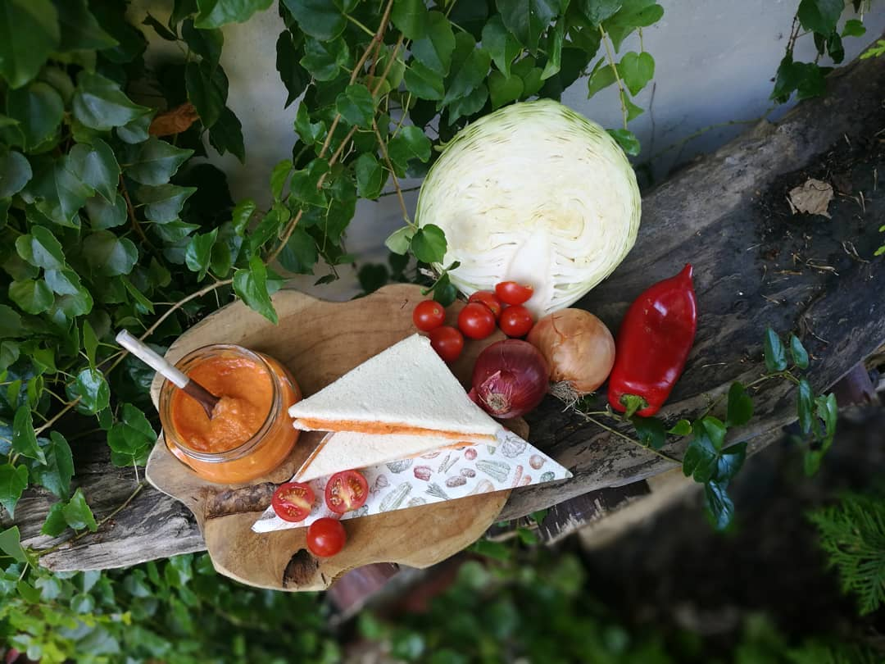

Zeleninová nátierka — Normy Jedál
Jednoduchá príprava, no originálna chuť. Vyskúšajte zeleninovú nátierku od #bohynenejenzkuchyne Recept nájdete na domiakami.blog #tvorivezeny #vkuchyni #dnesvarim #natierka #vegan #zeleninovanatierka #kapusta #paprika #paradajka #cibula #blogerkyczsk